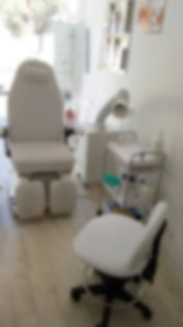

מה שכתוב על הדלת.What’s written on the door.
שישה טיפולים, מהשלט שבכניסה.Six treatments, from the sign at the entrance.
-
פדיקור רפואיMedical pedicure
עור קשה, סדקים וציפורניים עבות.Hard skin, cracks, thick nails.
לתאם תורBook this -
ציפורן חודרניתIngrown nails
הסרה של ציפורן שחודרת לעור.Removing a nail that grows into the skin.
לתאם תורBook this -
יבלותCorns and calluses
יבלות ועור מעובה.Corns and thickened skin.
לתאם תורBook this -
פטרייהFungus
פטרייה בעור ובציפורניים.Of the skin and of the nails.
לתאם תורBook this -
כף רגל סכרתיתDiabetic foot
טיפול בכף הרגל לחולי סוכרת.Foot care for people with diabetes.
לתאם תורBook this -
אבחון וייעוץAssessment
בדיקה של כף הרגל, והסבר.A look at the foot, and advice.
לתאם תורBook this


גם מניקור, כמו שכתוב על השלט שמעל הכניסה. איורי המכשירים: מתוך Practical Podiatry, 1918.Manicure too, as the sign above the entrance says. Instrument drawings: from Practical Podiatry, 1918.


הכיסא, המנורה והחלון.The chair, the lamp, the window.
חדר טיפולים קטן, ממש על המדרכה של רחוב בלפור.A small treatment room, right on the Balfour Street pavement.
- בגוגלOn Google
- 4.7
- ביקורותReviews
- 182
- שישיFriday
- 9:00–14:00
- רביעי ושבתWed and Sat
- סגורClosed
4.7 בגוגל.4.7 on Google.
״נטליה אשת מקצוע מעולה ומומחית אמיתית. טיפלה ביסודיות ביבלות קשות שלא קיבלו מענה בקופת חולים. מעבר לזה, היא מקסימה, עדינה ומסבירה כל צעד.״“Natalia is an excellent professional and a real expert. She thoroughly treated stubborn corns that the health fund hadn’t solved. Beyond that, she’s lovely, gentle and explains every step.”
״טופלתי אצל רופא עור, אורטופד, פדיקור רגיל והכל ללא הועיל. הגעתי לנטליה שזיהתה מיד את הבעיה. […] נטליה, שאפו על המסירות והידע הנרחב שיש לך.״“I’d been treated by a dermatologist, an orthopaedist and a regular pedicurist, all with no result. I came to Natalia, who spotted the problem right away. […] Natalia, hats off to your dedication and your knowledge.”
״קיבלנו טיפול מקצועי, יסודי ועם המון סבלנות ורגישות. […] ממליצים מכל הלב לכל מי שמחפש/ת מישהי שאפשר לסמוך עליה בעיניים עצומות.״“We got professional, thorough care, with lots of patience and sensitivity. […] We wholeheartedly recommend her to anyone looking for someone they can trust with their eyes closed.”
איפה זה מציק?Where does it bother you?
מסמנים על כף הרגל ושולחים לנטליה בוואטסאפ.Mark it on the foot and send it to Natalia on WhatsApp.

בלפור 3.3 Balfour Street.
רחוב בלפור 3, חיפה3 Balfour St, Haifa